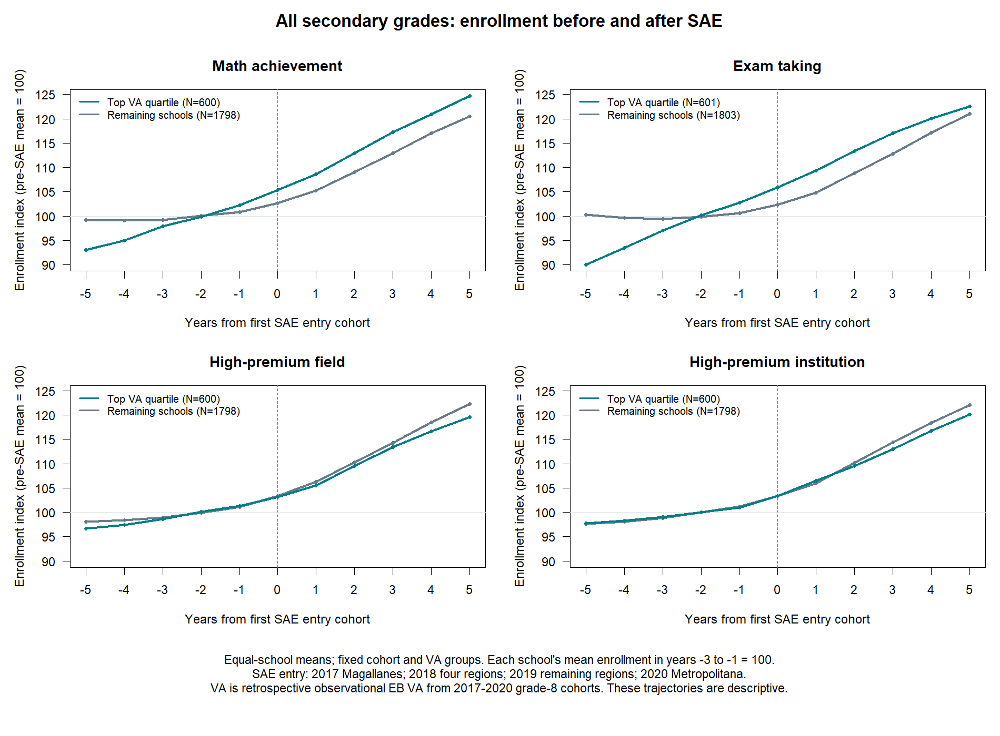
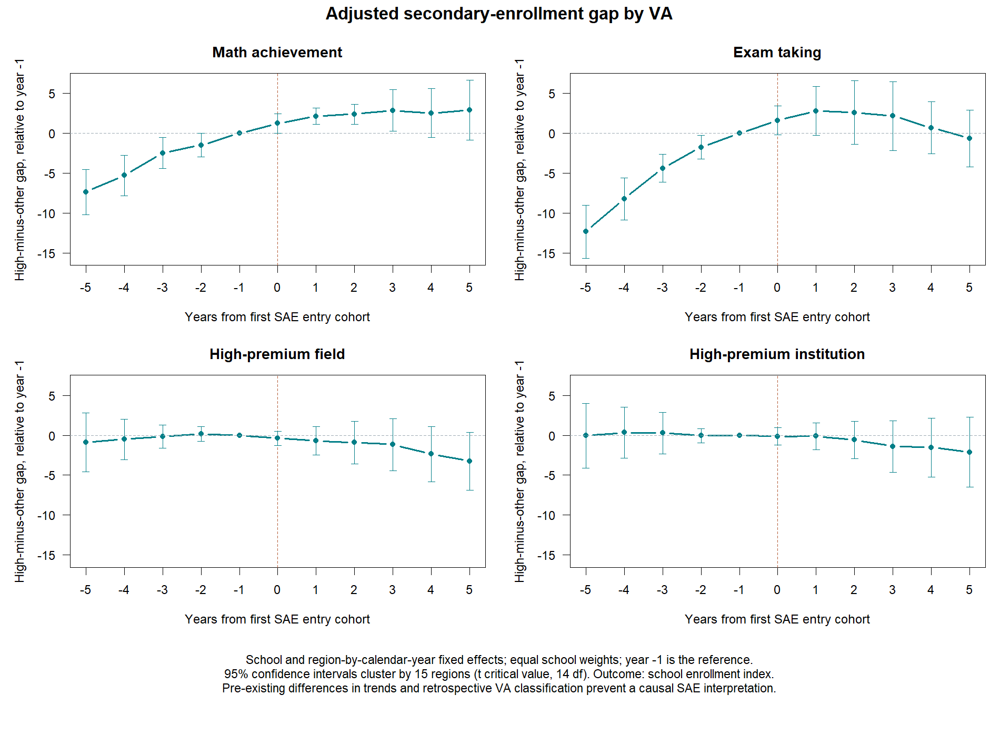
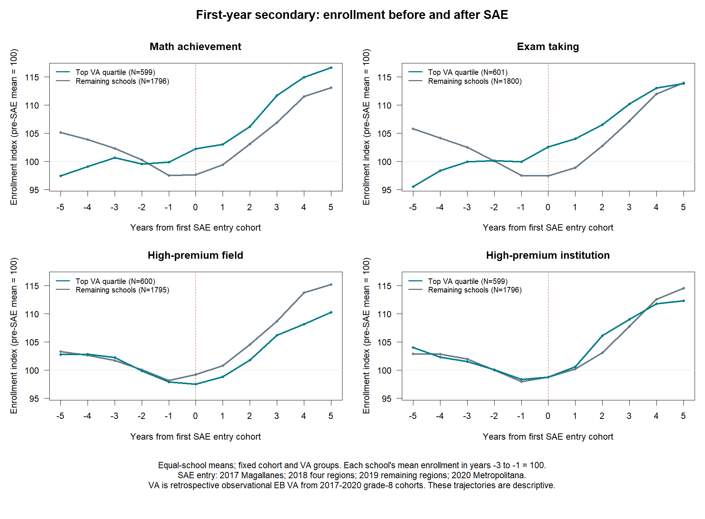

Did enrollment trends change at SAE for high-VA schools?
Annual observed secondary enrollment, 2010-2025. The analysis aligns schools to their region's first SAE entry cohort and compares the top quarter of schools by fixed VA with the remaining schools.
For math and exam-taking VA, the growth advantage predates SAE and weakens afterward. The adjusted high-minus-other growth gap falls from +1.85 to +0.28 index points per year for math, and from +3.11 to -0.52 for exam taking. The slope changes are -1.57 (95% CI -2.40 to -0.74) and -3.63 (-4.69 to -2.57), respectively. Both groups' enrollment grows after rollout in the raw normalized series; it is their relative growth advantage that shrinks. These findings survive the pandemic exclusion, enrollment weighting, continuous-VA measure, and five-pre-year incumbent restriction. Field VA gives weaker, specification-sensitive evidence; institution VA shows no clear trend break.
These are actual students, not capacity or advertised vacancies. The primary outcome is each school's secondary enrollment divided by its own mean in the three years before SAE, times 100. High VA uses the existing 2017-2020 cohort empirical-Bayes observational estimates, measured retrospectively. This is a descriptive trend-break check, not a causal estimate of SAE.
Secondary enrollment

Does the relative trend change?
Estimates below are the high-VA-minus-other difference in annual enrollment-index growth, in percentage points of each school's pre-SAE enrollment per year. The pre and post slopes come from a segmented linear model with a separate rollout-year level shift. Brackets show 95% confidence intervals, clustered by region (15 clusters; t with 14 degrees of freedom).
| VA measure | Schools | Pre-SAE slope gap | Post-SAE slope gap | Change in slope gap |
|---|---|---|---|---|
| Math achievement | 2398 | +1.85 [+1.16, +2.55] | +0.28 [-0.54, +1.11] | -1.57 [-2.40, -0.74] |
| Exam taking | 2404 | +3.11 [+2.30, +3.93] | -0.52 [-1.01, -0.02] | -3.63 [-4.69, -2.57] |
| High-premium field | 2398 | +0.25 [-0.67, +1.17] | -0.56 [-1.22, +0.10] | -0.81 [-1.53, -0.08] |
| High-premium institution | 2398 | -0.03 [-1.07, +1.01] | -0.42 [-1.20, +0.35] | -0.40 [-1.61, +0.81] |
Model: enrollment index = school fixed effect + region-by-calendar-year fixed effect + HighVA x event time + HighVA x Post + HighVA x max(event time,0). Event window -5 through +5. A positive slope change means the high-VA group's relative growth becomes more positive. It does not necessarily mean that group's enrollment rises in absolute terms. The post slope is the sum of the pre slope and slope change; its SE uses the full regression covariance matrix.

First-year secondary enrollment
Grade 9 is the immediate admissions margin. The VA group assignment is unchanged; schools must also have positive grade-9 enrollment in each of the three baseline years.

| VA measure | Schools | Pre-SAE slope gap | Post-SAE slope gap | Change in slope gap |
|---|---|---|---|---|
| Math achievement | 2395 | +2.36 [+1.89, +2.83] | -0.07 [-1.07, +0.93] | -2.43 [-3.68, -1.18] |
| Exam taking | 2401 | +3.05 [+2.44, +3.67] | -1.21 [-1.86, -0.57] | -4.27 [-5.36, -3.17] |
| High-premium field | 2395 | -0.15 [-0.99, +0.69] | -0.80 [-1.36, -0.24] | -0.65 [-1.70, +0.40] |
| High-premium institution | 2395 | +0.55 [-0.94, +2.04] | -0.54 [-1.48, +0.39] | -1.10 [-3.23, +1.04] |
Sensitivity: omit calendar years 2020 and 2021
| VA measure | Schools | Pre-SAE slope gap | Post-SAE slope gap | Change in slope gap |
|---|---|---|---|---|
| Math achievement | 2398 | +1.85 [+1.16, +2.55] | +0.31 [-0.57, +1.19] | -1.54 [-2.45, -0.63] |
| Exam taking | 2404 | +3.11 [+2.30, +3.93] | -0.56 [-1.18, +0.05] | -3.68 [-4.79, -2.57] |
| High-premium field | 2398 | +0.25 [-0.67, +1.17] | -0.53 [-1.22, +0.15] | -0.78 [-1.57, +0.01] |
| High-premium institution | 2398 | -0.03 [-1.07, +1.01] | -0.30 [-1.24, +0.65] | -0.27 [-1.59, +1.04] |
Sensitivity: weight schools by baseline enrollment
This gives more influence to larger schools rather than treating a small school's percentage change equally with a large school's.
| VA measure | Schools | Pre-SAE slope gap | Post-SAE slope gap | Change in slope gap |
|---|---|---|---|---|
| Math achievement | 2398 | +1.75 [+1.16, +2.33] | +0.46 [-0.08, +1.01] | -1.28 [-1.76, -0.80] |
| Exam taking | 2404 | +2.75 [+2.14, +3.35] | +0.26 [-0.14, +0.65] | -2.49 [-3.17, -1.81] |
| High-premium field | 2398 | -0.11 [-0.65, +0.44] | -0.63 [-1.05, -0.20] | -0.52 [-1.08, +0.04] |
| High-premium institution | 2398 | -0.01 [-1.00, +0.97] | -0.48 [-0.90, -0.05] | -0.46 [-1.36, +0.43] |
Sensitivity: at least 100 baseline secondary students
| VA measure | Schools | Pre-SAE slope gap | Post-SAE slope gap | Change in slope gap |
|---|---|---|---|---|
| Math achievement | 2124 | +1.64 [+0.79, +2.49] | +0.44 [-0.16, +1.04] | -1.20 [-1.95, -0.45] |
| Exam taking | 2126 | +2.60 [+1.96, +3.24] | +0.15 [-0.32, +0.63] | -2.45 [-3.12, -1.78] |
| High-premium field | 2124 | +0.02 [-0.42, +0.46] | -0.67 [-1.14, -0.19] | -0.68 [-1.22, -0.15] |
| High-premium institution | 2124 | -0.16 [-1.11, +0.79] | -0.32 [-1.20, +0.57] | -0.15 [-1.60, +1.29] |
Sensitivity: positive enrollment in all five pre-SAE years
Removes schools opening within the pre-trend window; VA group assignments and the three-year normalization remain fixed.
| VA measure | Schools | Pre-SAE slope gap | Post-SAE slope gap | Change in slope gap |
|---|---|---|---|---|
| Math achievement | 2328 | +1.50 [+0.68, +2.32] | +0.29 [-0.57, +1.15] | -1.21 [-2.02, -0.40] |
| Exam taking | 2334 | +2.95 [+2.12, +3.78] | -0.41 [-0.93, +0.12] | -3.36 [-4.40, -2.31] |
| High-premium field | 2328 | +0.18 [-0.31, +0.67] | -0.79 [-1.29, -0.29] | -0.97 [-1.57, -0.37] |
| High-premium institution | 2328 | -0.30 [-1.73, +1.12] | -0.64 [-1.32, +0.04] | -0.34 [-1.88, +1.21] |
Sensitivity: continuous VA
Here the slopes compare schools one school-level VA standard deviation apart rather than top-quartile versus the rest.
| VA measure | Schools | Pre-SAE slope gap | Post-SAE slope gap | Change in slope gap |
|---|---|---|---|---|
| Math achievement | 2398 | +0.85 [+0.39, +1.30] | +0.18 [-0.07, +0.44] | -0.66 [-1.06, -0.27] |
| Exam taking | 2404 | +2.62 [+2.27, +2.96] | -0.08 [-0.62, +0.47] | -2.69 [-3.27, -2.11] |
| High-premium field | 2398 | -0.07 [-0.22, +0.09] | -0.14 [-0.40, +0.11] | -0.08 [-0.32, +0.17] |
| High-premium institution | 2398 | -0.77 [-1.98, +0.45] | -0.16 [-0.64, +0.31] | +0.60 [-0.81, +2.02] |
Sample and timing
| label | ever_SAE_schools | pre_incumbents | matched_schools | high_VA_schools | grade9_eligible |
|---|---|---|---|---|---|
| Exam taking | 2621 | 2419 | 2404 | 601 | 2401 |
| High-premium institution | 2621 | 2419 | 2398 | 600 | 2395 |
| High-premium field | 2621 | 2419 | 2398 | 600 | 2395 |
| Math achievement | 2621 | 2419 | 2398 | 600 | 2395 |
The universe is RBDs with positive declared secondary capacity in any SAE process from 2016 to 2025. Incumbents must have positive regular youth secondary enrollment in each of the three years preceding their region's first SAE entry year. The cohort and VA groups stay fixed. Missing later regular-secondary records enter as zero reported enrollment; this is not a legal-closure classification. Schools that opened after the baseline are excluded. This eventual-SAE population does not represent every historical school or every pre-SAE closure.
Entry dates are 2017 Magallanes; 2018 Tarapaca, Coquimbo, O'Higgins and Los Lagos; 2019 the remaining non-Metropolitana regions; 2020 Metropolitana. Nuble is combined with historical Biobio. These dates refer to entry in grade 9; full coverage of other grades followed. Process/application year is one year earlier.
High VA is at or above the 75th percentile among matched incumbents, separately by outcome, with school weights. VA is adjusted observational EB VA, not school-specific lottery IV estimates. The cohorts and later outcomes used to measure VA overlap SAE, so this grouping cannot establish what administrators knew before SAE or identify a policy effect. Regional demographic/calendar shocks are absorbed by region-year effects, but shocks that differ by VA may remain. Fifteen regional clusters provide limited precision. Four-VA Benjamini-Hochberg adjusted p-values are supplied in the result CSV.
National enrollment context, including schools outside the fixed SAE sample
| year | secondary_students | grade9_students | secondary_schools |
|---|---|---|---|
| 2010 | 991716 | 284944 | 2717 |
| 2011 | 979987 | 284429 | 2785 |
| 2012 | 938936 | 277962 | 2864 |
| 2013 | 924905 | 271105 | 2894 |
| 2014 | 909674 | 264178 | 2921 |
| 2015 | 905244 | 265089 | 2936 |
| 2016 | 898171 | 259036 | 2947 |
| 2017 | 896547 | 255377 | 2968 |
| 2018 | 896755 | 246937 | 2993 |
| 2019 | 897736 | 246734 | 3003 |
| 2020 | 902912 | 243427 | 3014 |
| 2021 | 927440 | 244995 | 3019 |
| 2022 | 946768 | 257483 | 3038 |
| 2023 | 965886 | 266029 | 3058 |
| 2024 | 983945 | 268349 | 3070 |
| 2025 | 1009664 | 271784 | 3090 |
Sources and reproducibility
MINEDUC classroom enrollment archives: April 30 SIGE enrollment snapshots, 2010-2025. Sum N_ALU across unique classroom records in functioning schools and regular youth-secondary teaching codes 310, 410, 510, 610, 710, 810 and 910. Adult/special education is excluded. Combined classrooms use their grade-specific enrollment counts. Before 2015 the release covers functioning schools; from 2015 require ESTADO_ESTAB=1.
All regression results and sensitivities | Plot data | School-year analysis panel | Source audit | Code and definitions
Generated 2026-11-12. Additional saved sensitivity restricts to schools with positive 2021 SAE capacity, closer to the earlier capacity-growth exercise. All source hashes, regional timing, match counts, event-study estimates and fitted regression objects are saved.